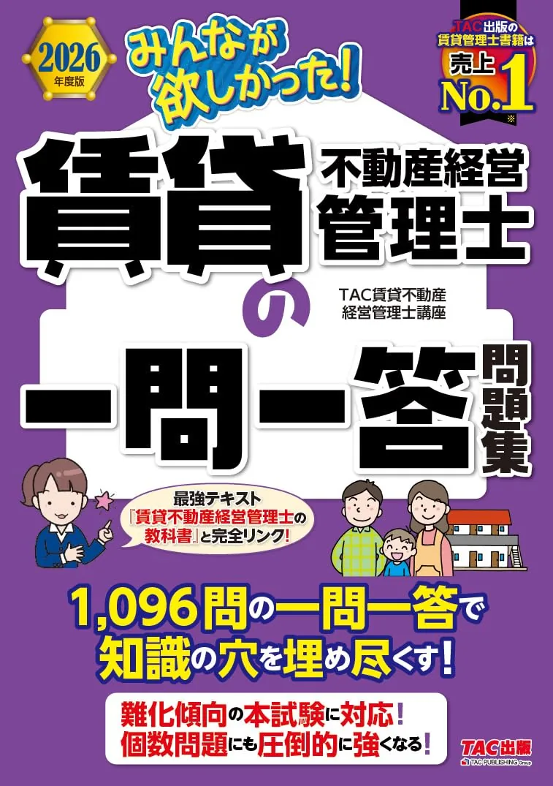
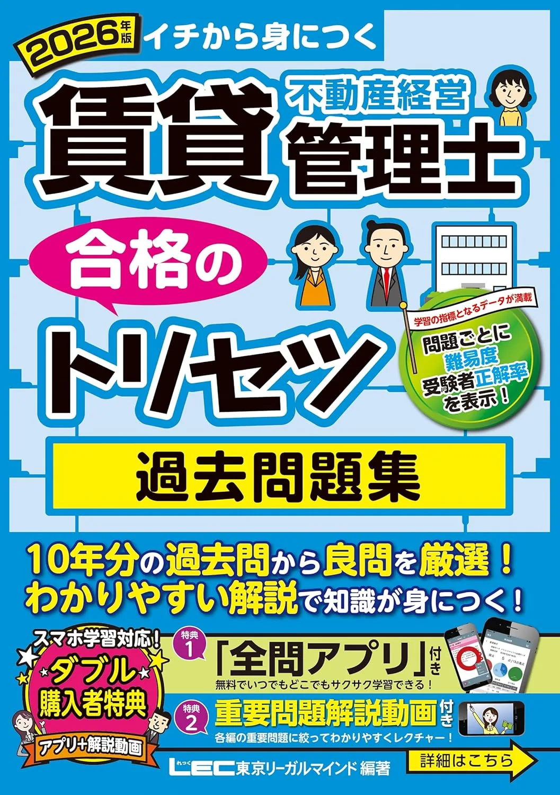

賃貸不動産経営管理士のおすすめ問題集3選｜一問一答と過去問
問題集3冊を、収録形式・解説量・手元テキストとの相性で比較します。価格・在庫は購入前に各Amazonページでご確認ください。
この記事の信頼性について
| 執筆 | 賃管マスター編集部（資格学習サイトの編集チーム） |
|---|---|
| 確認 | 公式情報確認担当（公開前に一次情報との照合を行う担当者） |
| 事実確認日 | 2026-06-12 |
| 主な参照元 |
18月まで：問題集選びの3基準
問題集選びは、テキスト読了後の9月通し演習を見据えて決めます。たとえば6月11日の週末にテキスト1冊を確定——8月末までに第1周、9月から50問120分の通しを月2回、という順序が定番です。
| 基準 | 内容 |
|---|---|
| 形式 | 本試験に近い50問120分の演習ができるか |
| 復習 | 3分野別に弱点を戻れるか |
| 接続 | 解説からテキスト該当章に戻れるか |
- TAC教科書利用者はTAC一問一答
- LECトリセツ利用者はLEC過去問題集
- 他社テキストなら建築資料研究社過去問——と同系統1冊に絞ると復習効率が上がり
解き方の型は過去問活用法のガイドで詳述しています。
おすすめ問題集3選（比較）
価格・在庫は執筆時点（2026-06-12）のAmazon税込参考です。購入前に販売ページで最新版を確認してください。
| 順位 | 商品名 | 価格（税込参考） | ページ数 | 向いている人 |
|---|---|---|---|---|
| 1 | 2026年度版 みんなが欲しかった! 賃貸不動産経営管理士の一問一答問題集 | ¥2,090 | 524 | テキスト読了後に一問一答で演習量を確保したい人 |
| 2 | 2026年版 賃貸不動産経営管理士 合格のトリセツ 過去問題集 | ¥2,530 | 789 | LECテキストとセットで過去問演習をしたい人 |
| 3 | どこでも! 学ぶ 賃貸不動産経営管理士 過去問題集 2026年度版 | ¥2,640 | 536 | 過去問を解説付きで通し演習したい人 |

2026年度版 みんなが欲しかった! 賃貸不動産経営管理士の一問一答問題集
- TAC教科書と章立てが揃いやすい
- 3分野を短問形式で総復習しやすい
- 直前期の穴埋め演習にも使える

2026年版 賃貸不動産経営管理士 合格のトリセツ 過去問題集
- 合格のトリセツシリーズで解説付き過去問
- 本試験形式の演習量確保に向く
- TAC一問一答との使い分けがしやすい
どこでも! 学ぶ 賃貸不動産経営管理士 過去問題集 2026年度版
- 建築資料研究社の過去問シリーズで定番
- スキマ時間学習と相性がよい構成
- 他社問題集との併用で演習量を増やしやすい
23冊の組み合わせ：テキスト別の1冊
手元テキストに合わせた組み合わせの目安です。例えば8月下旬にテキスト半分を読み終えた時点で問題集1冊を決め、9月は分野別15問/週から入る設計が現実的です。
| メインテキスト | おすすめ問題集 |
|---|---|
| TAC入門→TAC教科書 | TAC一問一答問題集 |
| LECトリセツ | LEC過去問題集 |
| 他社・独学テキスト | 建築資料研究社過去問題集 |
1冊に絞る場合は同出版社・同シリーズを優先し、購入前にAmazon販売ページの見本目次で弱点分野が項目別に並ぶか確認してください。テキスト未決定ならおすすめテキストの記事で先に1冊を選んでください。
31位 TAC一問一答：弱点25問/週から
「2026年度版 みんなが欲しかった! 賃貸不動産経営管理士の一問一答問題集」（TAC出版・524頁・B5判）は、短問形式で弱点分野の演習に向く定番です。たとえば9月初旬に法令15問、中旬に契約実務15問——3分野を2週ずつ回すと10月の通し50問120分の準備が整います。
| 強み | 弱み・注意 |
|---|---|
| 3分野を短問で総復習しやすい | 初受験はテキスト先行が安全 |
| TAC教科書・直前教材と接続◎ | 他社テキストとの章ズレ |
| 直前期の穴埋めにも使える | 価格はAmazonで要確認 |
当サイトの過去問演習で3分野別正答率を記録してから通し50問に入ると効率的です。購入前にAmazon販売ページで最新価格・在庫を確認してください。
42位・3位 LEC過去問と建研過去問
「2026年版 賃貸不動産経営管理士 合格のトリセツ 過去問題集」（LEC・789頁・B5判）は、トリセツテキストと縦串で復習しやすい構成です。例えば9月初旬に法令20問＋契約15問、中旬に設備税務15問——という3分野ローテが組み立てやすいです。
| 問題集 | 向く人 |
|---|---|
| LEC過去問題集 | LECトリセツ利用者 |
| 建築資料研究社過去問 | 解説付き通し演習・他社テキスト併用 |
どこでも! 学ぶ 賃貸不動産経営管理士 過去問題集（建築資料研究社）は8月末読了後のメイン演習向け。いずれも購入前にAmazon販売ページで価格・版を確認してください。
5過去問ループ：3日・7日後の解き直し
推奨ループの具体例です。具体例として9月中旬の土曜120分で通し50問を解き、月曜に誤答10問をテキスト該当章へ戻る——木曜・翌週月曜に3日後・7日後解き直し、というサイクルが定番です。
| 段階 | 作業 |
|---|---|
| 1 | 当サイト演習で3分野別正答率を記録 |
| 2 | 問題集で120分・50問の条件で通し |
| 3 | 誤答は用語解説→テキスト該当章→3日・7日後に解き直し |
| 4 | 新規追加より解き直し比率40％以上を維持 |
| 5 | 11月15日の4週前から新規過去問追加を抑制 |
TAC教科書→一問一答→当サイト演習の縦串が11月15日試験への逆算と相性がよいです。
6よくある質問
過去問だけで合格できますか？
一問一答と過去問、どちらを先に買いますか？
問題集は何冊必要ですか？
記事の基本情報
| ジャンル | 過去問活用 |
|---|---|
| タグ | 独学 / 参考書 |
公式情報の確認
公式情報の確認：賃貸不動産経営管理士試験の最新情報は、賃貸不動産経営管理士協議会（公式）などの公式情報を必ず確認してください。本人に割り当てられた試験会場は受験票の表記が正本です。